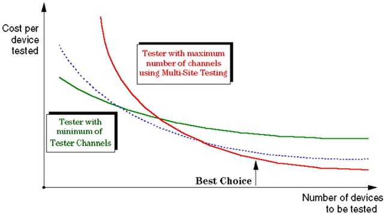

Why Multisite?
By running a multisite test on the V93000 you can test multiple identical devices in parallel.
The maximum number of sites is defined by the system constant MAX_NR_OF_SITE. The constant is defined in the header file /opt/hp93000/soc/prod_com/include/MAPI/SiteControl.h.
All devices are tested simultaneously, thus reducing the overall testing time to a fraction.
You can also make optimum use of your test system's resources when testing devices with fewer pins than the number of channels your test system provides (mixed test floor). The more devices you have to test, the more beneficial multisite testing becomes, as the figure below indicates.

For testing just a few devices, it would take much longer (and therefore cost much more) to manufacture a complex multisite DUT board, than to test all devices one after the other in a single-site Setup.
With a growing number of devices, however, this ratio reverses. For a large number of devices to be tested, testing time adds up quickly whereas additional costs for a more expensive DUT board become insignificant.
Functional changes
- Introduced before SmarTest 6.3.2